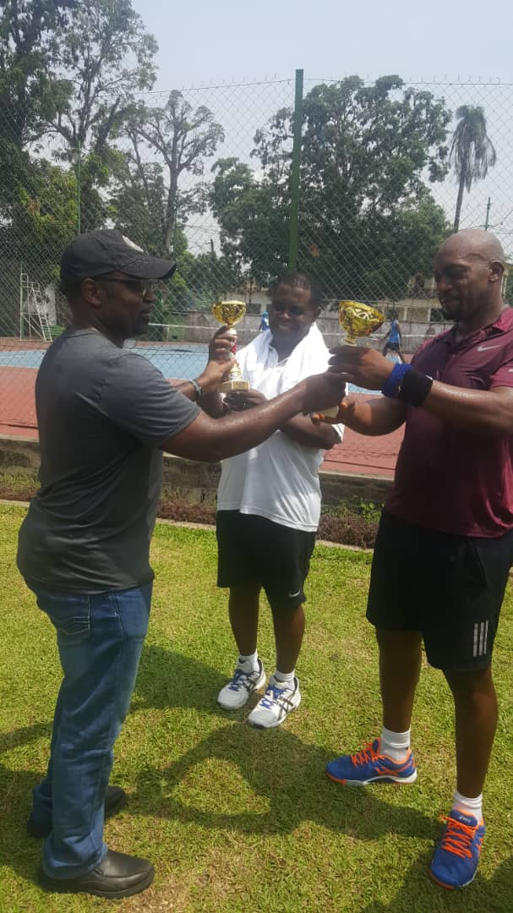
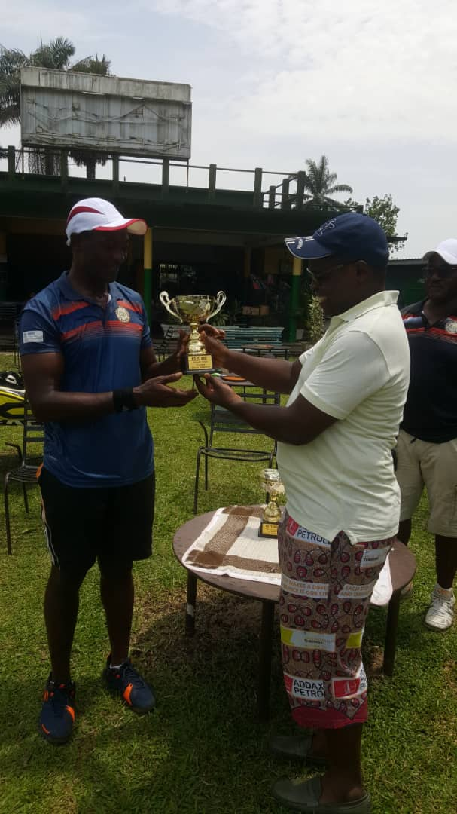
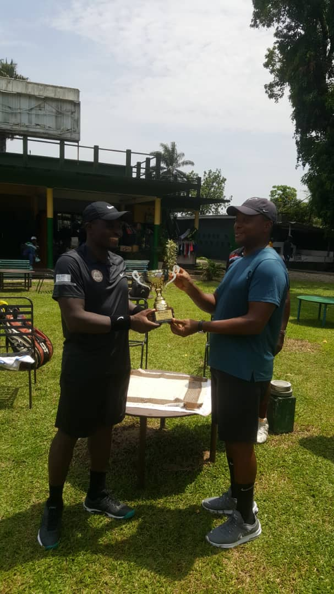

A Wonderfull day, great athmosphere, good friends came together to participate in Batie Tennis Tournament PÔ YÙSSÙ 2020 Edition.
 Ernie Tagho
April 04, 2020
Ernie Tagho
April 04, 2020
Already traditional, Batie Tennis Tournament brings together different people to enjoy in the beauty of sports.
This year's tournament was especially challenging: new participants and new energy have been introduced. Good mood and sport's spirit were present all the time.
We all know that the regular exercise through playing sports boosts confidence and improves self-esteem. Physically active mind is distracted from daily stress. This can help you avoid getting bogged down by negative thoughts.
Signles Title:
Winner:
Michel Silinou
Runner up:
Joseph Simeu
Doubles Title:
Winner:
Dr Kapahou Enoch & Alain Happi
Runners Up:
Michel Silineu & Serge Kamgang
Fairplay:
Louis Colince Kemoe
Coordinating Tournament Coach::
Maurice Hapi
Nevertheless, all of the participants had a good time here. We hope this tradition will countinue in the upcoming years.



Hall of Fame 2014 - 2019

A legendary UCLA basketball coach, John Wooden says: "Sports do not build character. They reveal it."
Most people think the only benefits of sports are physical. However, sports are more than just developing hand-eye coordination and burning calories: they improve physical health, provide psychological benefits, and maybe the most important, they help people build mutual frindship and respect.
In Batie we cherish a tradition of organizing a tennis tournament for years. It is all about the fair-play, having fun and enjoying the beauty of sport.